🎂 Eistorten
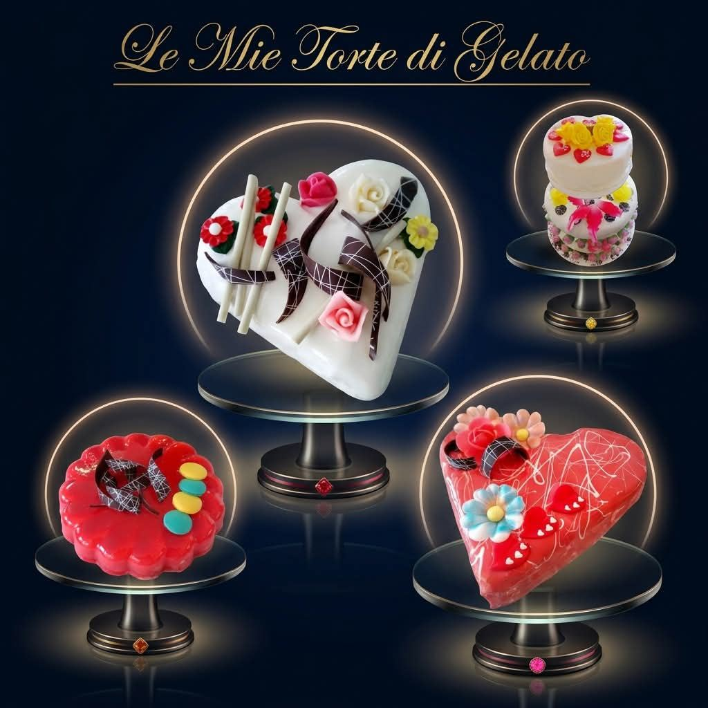
🔎 Finde sofort die passenden Anbieter für deine Eistorte
Ein kleines, spezifisches Archiv für jede Komponente der Eistorte, damit du keine Zeit mit Suchen verlierst: wähle den Bereich, den du brauchst.
Wie man eine Eistorte aufbaut
Eine gut gelungene Eistorte ist vor allem eine Frage der Balance zwischen den Schichten: jede Komponente (Basen, Glasuren, Knuspereinlagen, Tränkungen) trägt zur endgültigen Struktur bei und beeinflusst, wie sich das Produkt schneiden und auftauen lässt.
- Eisbasis/en: meist 2–3 verschiedene Sorten, auch nach Farb- und Konsistenzkontrast ausgewählt (z. B. eine Milchbasis und eine Frucht- oder Schokoladenbasis).
- Knusprige Schicht: zerbröckelte Kekse, Waffeln, Praliné oder Krokant, oft mit Kakaobutter oder Schokolade gebunden, damit sie auch tiefgefroren knusprig bleibt.
- Variegatos und Glasuren: sorgen für Geschmackskontrast und einen visuellen Effekt bei den Scheiben; müssen dosiert werden, um die Struktur nicht zu überladen.
- Äußere Verzierung: Spiegelglasur, samtig wirkender Spray-Effekt oder einfache Glasur — vor allem eine Frage der Präsentation und der Haltbarkeit in der Vitrine.
Was man braucht und wie man vorgeht, Schritt für Schritt
Benötigte Ausrüstung und Zutaten: ein Schockfroster, Silikonformen, eine bereits fertige Glasur (oder eine Schokoladenglasur-Mischung zum Zubereiten), ein Mixer/Rührgerät, auch ein haushaltsübliches — und Geduld, denn zwischen den einzelnen Schritten wartet man ziemlich lange.
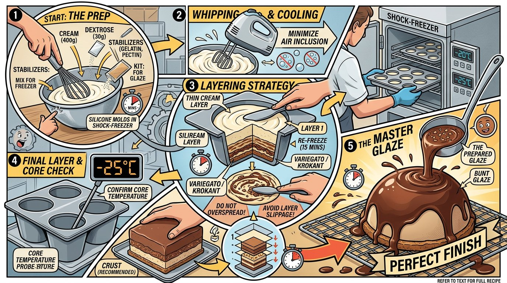
Das Verfahren, das ich selbst anwende, am Beispiel einer Silikonform:
- Ich stelle die (leere) Silikonform für 10 Minuten in den Schockfroster.
- In der Zwischenzeit schlage ich etwa 400 g Sahne auf, mische etwa 30 g Dextrose ein und rühre langsam, um beim Aufschlagen möglichst wenig Luft in die Sahne einzuarbeiten (das Ziel ist eine feste, aber nicht zu luftige Sahne).
- Ich nehme die Form aus dem Schockfroster und verteile eine dünne Schicht Sahne auf der gesamten Innenfläche der Form; dann wieder für 10–15 Minuten in den Schockfroster.
- In der Zwischenzeit nehme ich das Eis für die erste Schicht heraus und lasse es etwas weich werden.
- Ich nehme die Form heraus und fülle die erste Eisschicht ein, dann wieder für 15 Minuten in den Schockfroster.
- Denselben Schritt wiederhole ich für die zweite und dritte Schicht.
- Zwischen den Schichten kann man Krokant oder Variegato einfügen — aber nicht auf der gesamten Fläche: sonst besteht die Gefahr, dass die Schichten gegeneinander verrutschen.
- Ich lasse die Torte im Schockfroster, bis die Kerntemperatur-Sonde -20/-25 °C anzeigt.
- In der Zwischenzeit habe ich die Glasur schon vorbereitet.
- Ich nehme die Torte aus dem Schockfroster und setze sie auf einen Boden: ich empfehle, ihn mit einer Tränke zu befeuchten, oder einen Keksboden zu verwenden.
- Ich gieße die Glasur, die Raumtemperatur haben muss.
- Ich dekoriere sofort, oder gebe noch 5 Minuten Schockfroster, bevor ich dekoriere.
- Ich lasse die Torte bis zum vollständigen Durchfrieren im Schockfroster und bewahre sie danach in einem statischen, nicht umluftbetriebenen Gefrierschrank auf (in einem Umluftgerät verliert die Torte an Volumen).
Zwei praktische Tipps: statt drei flacher, übereinandergelegter Schichten wirkt es oft besser, in der Mitte eine "Insel" mit einer anderen Sorte zu schaffen — das macht optisch und beim Anschneiden viel her. Und wenn du den Mixer benutzt, um ein Aroma oder eine Farbe in die Glasur einzuarbeiten, halte den Mixerkopf immer ruhig am Boden des Behälters: so vermeidest du, Luft einzuarbeiten — dasselbe Prinzip wie beim langsamen Aufschlagen der Sahne.
Häufige Fehler, die man vermeiden sollte
- Basen, die im Vergleich zu den benachbarten Schichten zu hart oder zu weich sind, was das Schneiden bei Serviertemperatur erschwert.
- Zu viele flüssige Anteile/Variegatos, die beim Gefrieren unangenehme Kristalle bilden.
- Ungleichmäßiges Auftauen: eine Torte muss immer erst auf Serviertemperatur (meist -14/-16 °C) gebracht werden, bevor sie geschnitten und serviert wird.
Um die passendsten Basen für eine Eistorte auszuwählen, nutze den Produktvergleich auf dieser Seite, um PAC-Wert, POD-Wert und Trockenmasse direkt nebeneinander zu bewerten.
📸 Ideen und Dekorationen für Eistorten
Eine über die Jahre entstandene Sammlung von Eistorten-Dekorationen: Blumen aus Zuckerpaste, Schokoladenbänder und -scheiben, Macarons, frisches Obst und marmorierte Glasuren — konkrete Anregungen, um eine Eistorte nach den oben beschriebenen Prinzipien von Schichten, Knuspereinlagen und Verzierungen zu dekorieren.

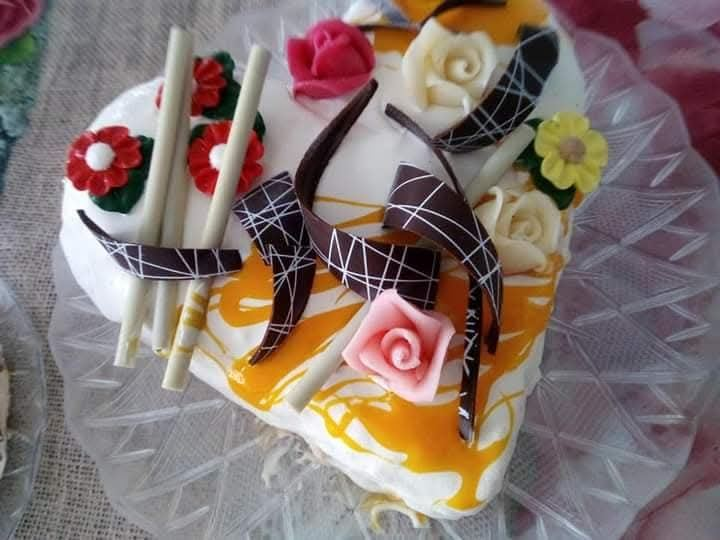

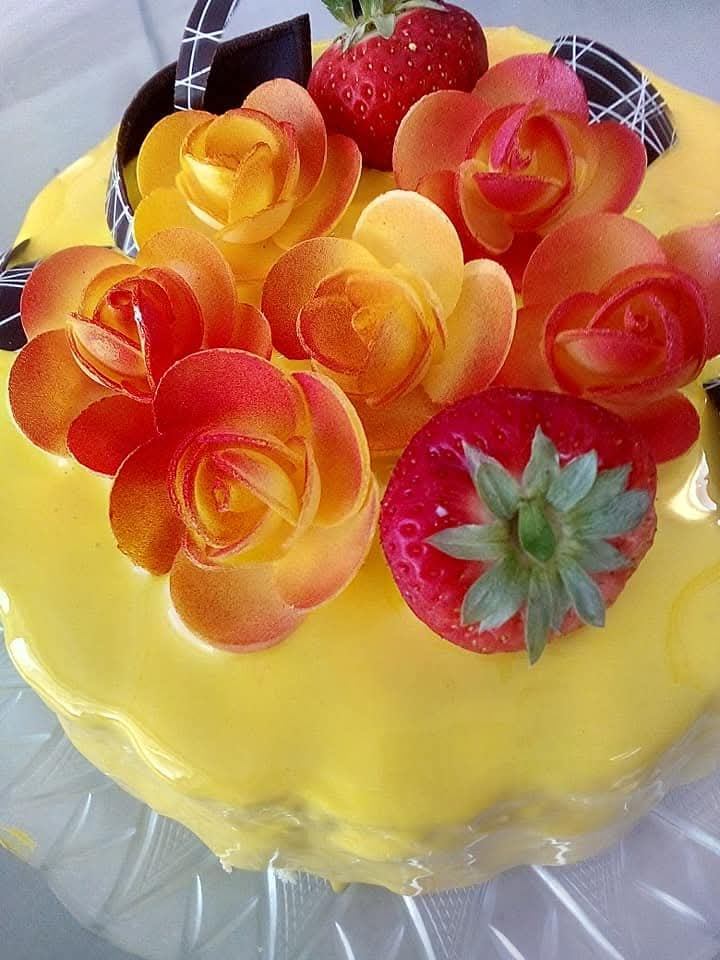


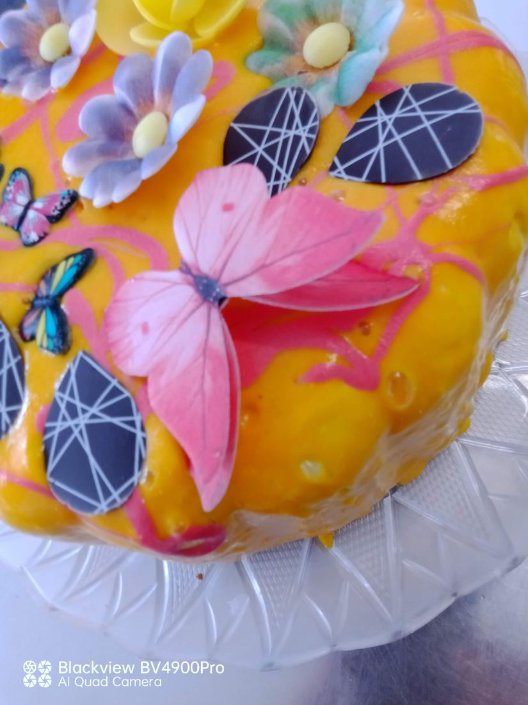


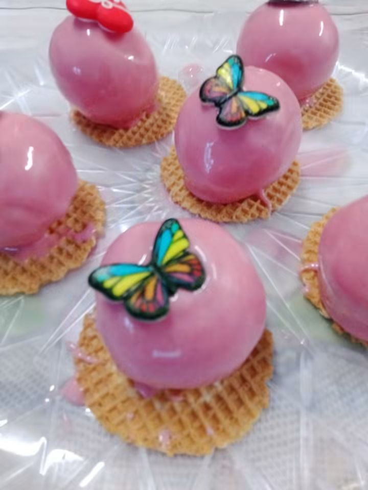
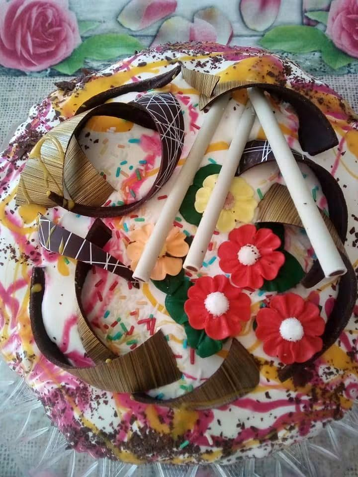

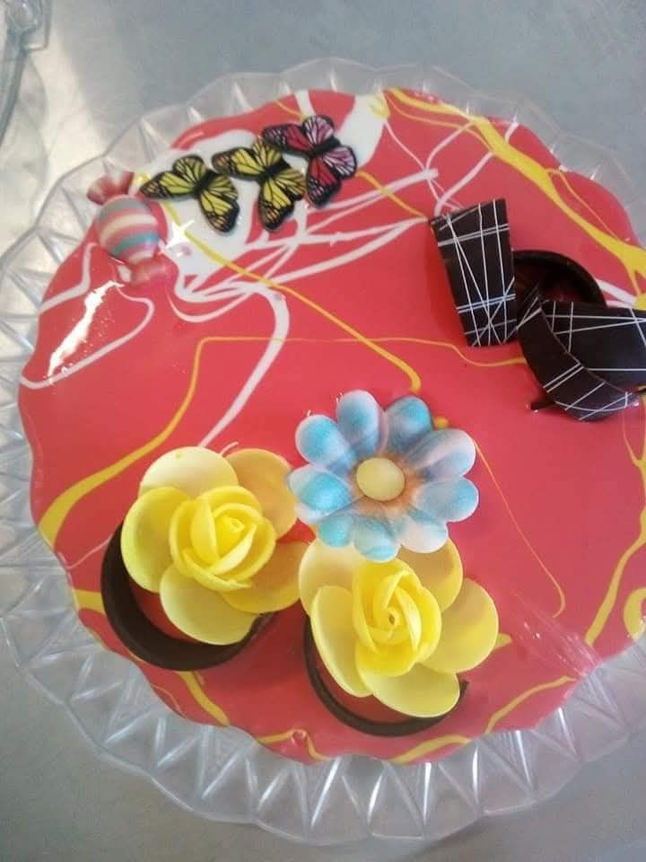


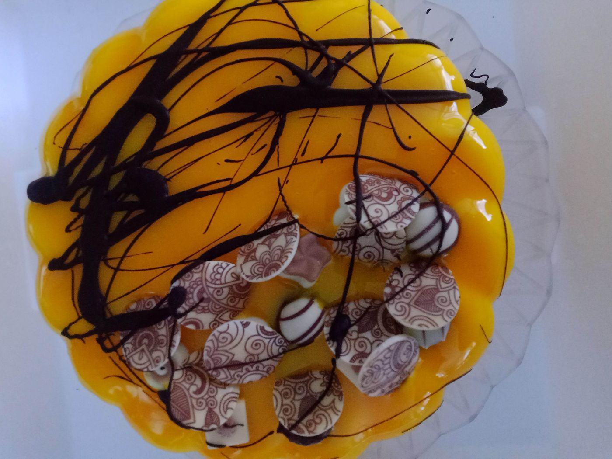
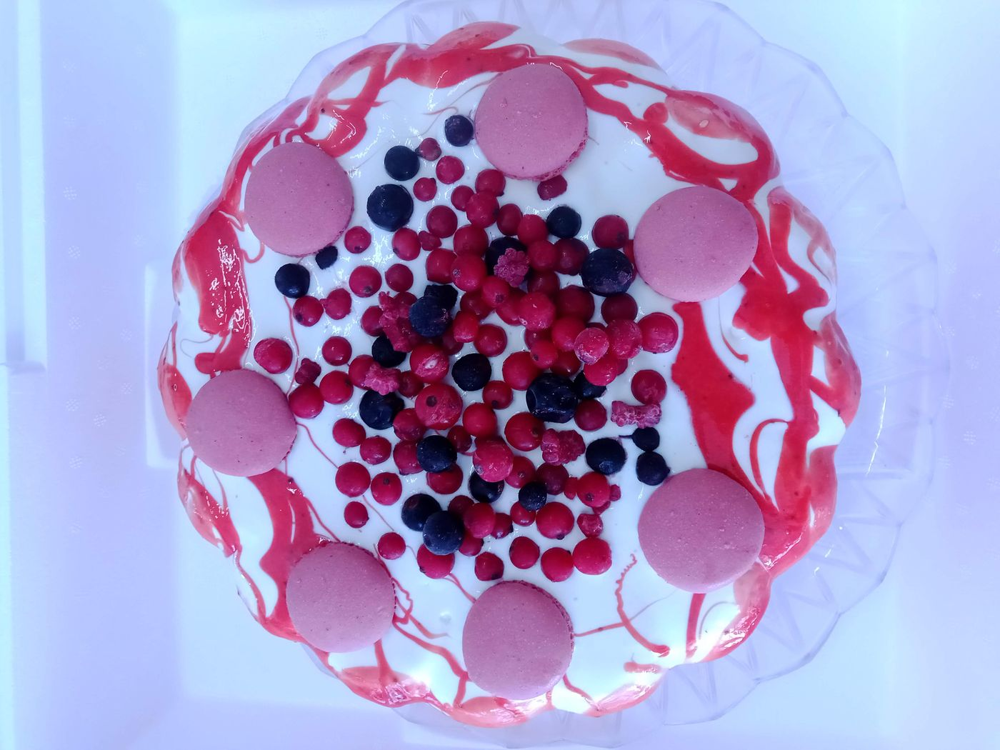


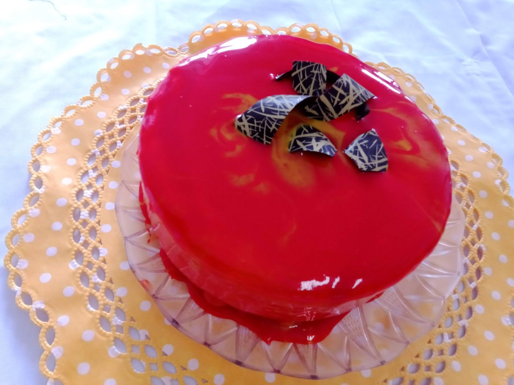
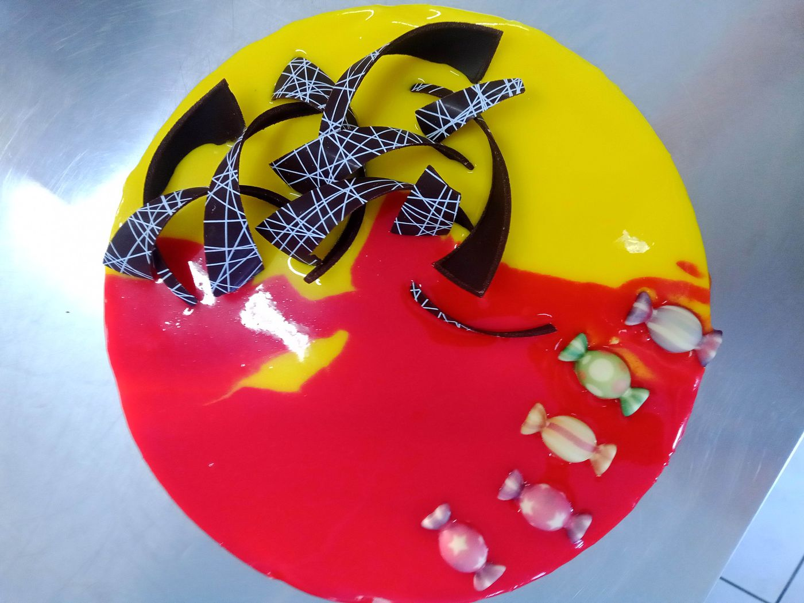
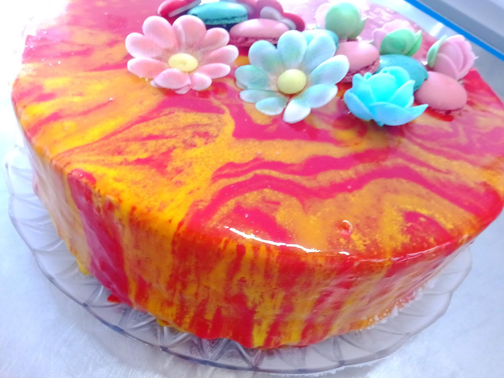